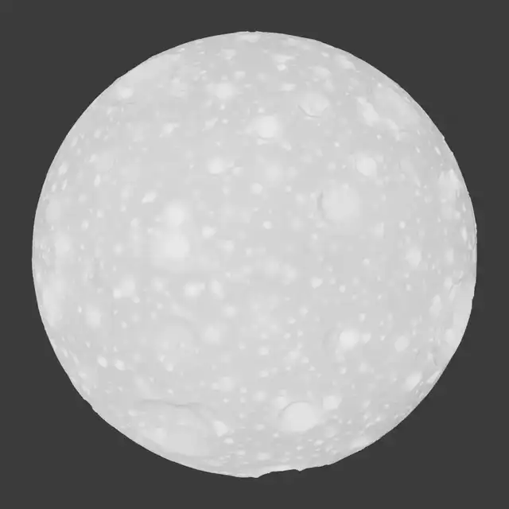
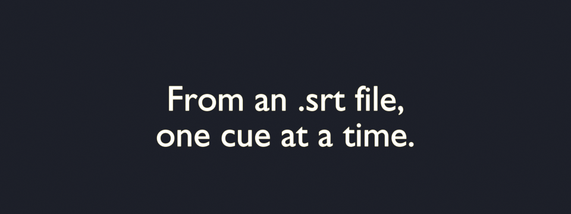
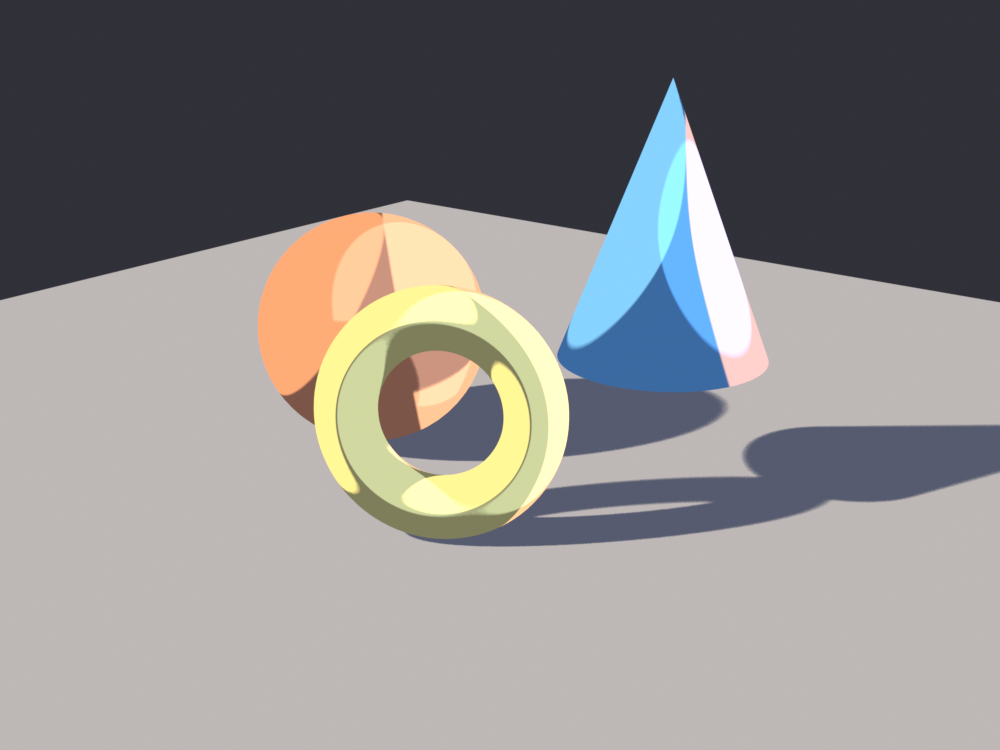
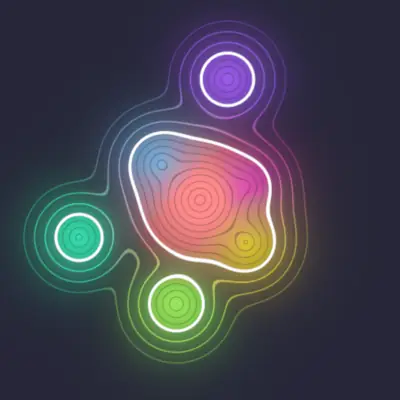
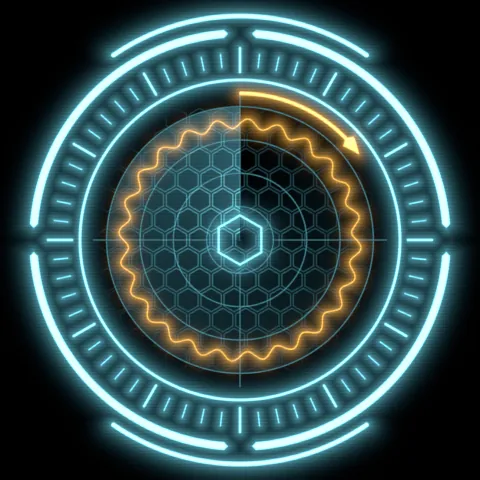
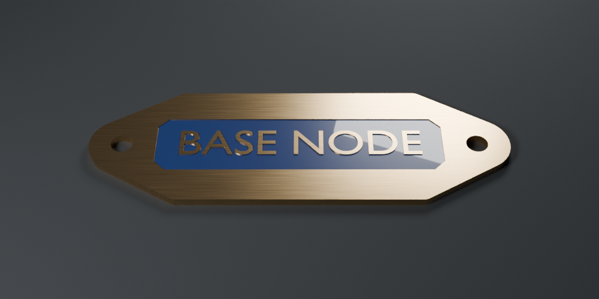
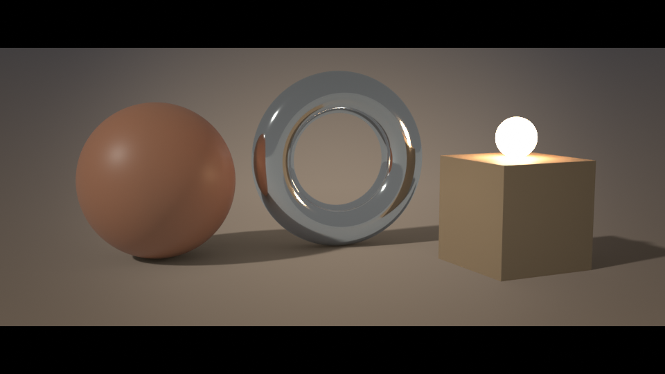
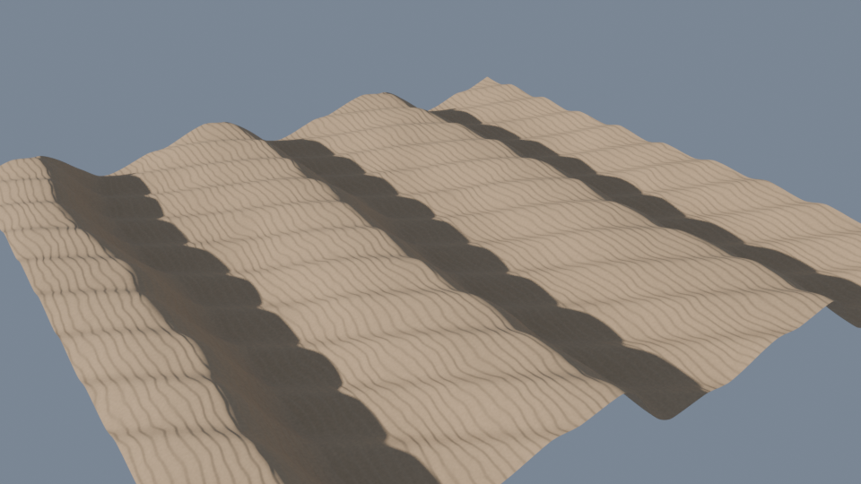

Tutorials
One subject per tutorial, built step by step in Blender. Each step is a complete .bn file to paste into a node editor, with the picture it renders.

Lunar ground
Geometry Nodes and a material, 8 steps.
A crater profile from three curves, a Voronoi field of craters, layers of every size in a Repeat zone, a slab, a dust material that reads an attribute of the geometry, and details down to the millimetre.

Mini moon
Geometry Nodes and a material on a sphere, 5 steps.
Crater sites scattered on the surface by Poisson disk, each crater measured in the plane of its normal and dug along the surface's normals, layers of every size, a dust material, and the phases.

SRT subtitles
Geometry Nodes reading a file, key points only.
An .srt subtitle file read with Import Text and the string nodes, a Repeat zone that walks it block by block, and the cue of the scene time drawn as text.

Toon lights
An EEVEE material, Blender 5.3, 5 steps.
Toon shading lit light by light with the lighting nodes of Blender 5.3: a hard band per light, a tinted shadow, a threshold and a rim set on each light by a custom property, then the module toon in one call.

Shaping motion
Geometry Nodes, a first tutorial, 5 steps.
A grid of columns lifted by a wave, bent with bias and gain, cut into steps, ten shaping curves of the free module math side by side, then a drop and its ripples animated over time.

2D metaballs
Geometry Nodes on a flat canvas, free standard library, 6 steps.
Signed distance fields as a way of thinking: the distance to a circle, min as a union, smooth_min as the blob, a crowd melted in a repeat zone with its colours, contour lines and grown outlines, then motion shaped by bounce, elastic, recoil and impulse.

Sci-fi HUD
A material and Geometry Nodes, free standard library only, 7 steps.
An animated radar dial where every line is a distance: sdf2d shapes cut and repeated in the material, patterns2d cells and curves2d gauge and wave measured on the screen's vertices, motion from math's steps, gain and bias, and a glow from the distances.

Cut plate
Geometry Nodes and two materials, from closed 2D lines, 6 steps.
Round and cut corners with fillet2d, screw holes centred on the arcs, a stencil and its falling counters, then a sunken enamel panel with raised letters, all cut by even-odd parity with planar2d.

Check and grade a shot
The compositor, free standard library only, 7 steps.
Test patterns, false colour, alpha and clip checks on a render, an over on a backdrop, a grade of the plate, a reformat by STMap, a letterbox, a vignette, a soft clip and a final check as heat, with qc, grade, merge, mask2d and stmap.

Write your own module
Modules, the language and the free standard library, 6 steps.
A graph moved into a file of its own and found by use, a material in a third file, a head, a version and documented inputs as the standard library's modules have, a module built on math, then installed in the Module Folder and called from anywhere.
Tutorials for the author's commercial packs are on ludopant.com.